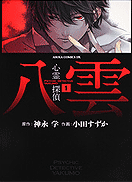

- 名侦探柯南主角工藤新一原本是一位颇具名声的高中生侦探，在目击黑衣组织的地下交易后，准备追踪时却被黑衣人琴酒袭昏，并被灌下代号为“APTX4869”（アポトキシン4869）的不明药物。后来虽然幸免于死，但身体就此缩小为小学时期的模样。之后他化名为江户川柯南，在好友阿笠博士的建议下，寄住在青梅竹马毛利兰的父亲－别脚侦探毛利小五郎家中，继续秘密从事追查黑暗组织的工作，并私下探寻获得解药的管道，希望能够恢复原来新一的样貌。与此同时，柯南凭著自己的推理天份，配合阿笠博士为他发明的道具，帮助毛利小五郎成为出名的大侦探。故事内容当中穿插许多爱情、友情、犯罪、背叛、复仇等情节。
- 魔侦探洛基一部以侦探为名的动画，烙上了北欧神话的印记，带着独特的异域风情，让人看了以后大跌眼镜，这就是我们今天要介绍的又一个“侦探”故事，《魔侦探洛基》 。其实说是“侦探”，洛基的正业基本半荒废着。这位北欧神话中的邪神被奥丁贬到人间以后，一边经营着自己的侦探事务所一边收集邪火重回神族。由于身份特殊，他的对手总是各类幽灵鬼怪或前来追杀的天神（说实话看之前建议先看看北欧神话- -）。
- 推理之绊鸣海步是月臣学院的一年级学生，他的兄长鸣海清隆被称为“拥有神的头脑”。可是在两年前却神秘地失踪了。之前，他曾留言去寻找“诅咒之子”，但真相究竟如何至今没有人知道！鸣海步的智能丝毫不输于兄长，为了查明失踪之迷，他展开了一系列的调查…… 月臣学院的学生鸣海步是一个聪明但作风懒散的少年，自从两年前他哥哥留下意味不明的词句失踪后就与当刑警的嫂子鸣海园相依为命，有那种家事什么也不做的老婆怪不得老哥会离家出走，但“追寻不为人知的真实”和“诅咒之子”究竟代表着什么？神秘的杀人事件开始接连在鸣海步身边发生，而疑点都似有若无地指向“诅咒之子”和其后的神秘真相，到底这些与失踪的哥哥有没有关联？哥哥何时才能回来？阿步和阿园的心中充满了疑惑。
-  心灵侦探八云在上大学二年级的小泽晴香为了帮助一个说自己“被灵附身了”的朋友，敲开来电影研究会的门。在那等着她的是传闻中拥有灵能力的齐藤八云。八云是一个看起来没有生气头发乱糟糟，仿佛将自己的心灵封闭起来了的青年，但是他的左眼却非常的惹眼，是血红的瞳色……晴香刚开始的时候也只是半信半疑。但是在八云把在晴香年幼时死亡的双胞胎姐姐的话传达给晴香之后，便彻底相信了他的力量。之后两个人活跃在学校之内，将学校内发生的各种各样恐怖事件的真相给揭开了。但是那只不过仅仅是续章而已……
- 侦探歌剧少女福尔摩斯 近未来，世界上存在着拥有“Toys”这种特殊能力的人类。于是，持有“Toys”能力的“侦探”和“怪盗”相互争斗。这个故事就是围绕着将来以侦探为目标的夏洛克、尼禄、艾露库尔、科迪莉亚等四个少女展开的。
- 侦探学院Q 少年Q是个初中三年级学生。由于幼年遭诱拐有幸为一位侦探救出而立志于成为侦探。 “团侦探学院”是由传说中的名侦探--团守彦担任校长的侦探学校。Q在参加入学考试时聚集了兴趣相投的4位伙伴成立了特别班“Q班”。Q和伙伴们发挥各自特殊的能力解开了一个个困难时间的疑团！
-
热门关键词：热血 机战 恐怖 搞笑 神魔 经济 推理 浪漫